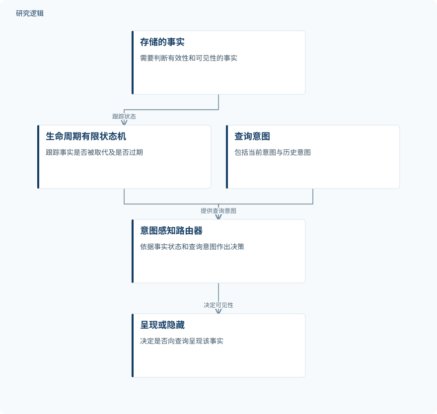

摘要解读
有效性并非可见性：智能体记忆的生命周期有限状态机
Validity Is Not Visibility: A Lifecycle FSM for Agent Memory
解读更新 2026-11-27 21:45 · 依据公开摘要整理，未核验全文细节
大语言模型智能体的长期记忆不仅要判断事实是否仍然有效，还要判断它是否应出现在当前回答中。本文提出将两者分开处理，为理解历史事实的检索提供了一个视角。
文章目录
事实不再有效，仍可能值得检索
长期记忆需要面对的一个难题是：同一事实是否应该被呈现，取决于用户正在问什么。对于已被新事实取代的记录，面向当前情况的查询应当隐藏它；但如果用户询问历史情况，它又可能需要被检索出来。
摘要指出，现有记忆系统经常把有效性与可见性合并为单一标量分数，也将被取代和已过期的事实压缩到同一有效性轴上。这种处理可能难以表达当前意图和历史意图所需的相反检索决策。
用生命周期状态连接查询意图
作者提出 MemFSM：一种无需训练的检索侧层，通过记忆生命周期有限状态机将有效性与可见性分开。在有效性维度，四状态有限状态机跟踪每条事实是否被取代以及是否过期。
在可见性维度，意图感知路由器根据事实状态和查询意图，决定呈现还是隐藏该事实。摘要同时介绍了 ValidMem 基准：它为事实标注被取代与过期两类标签，并为每个记忆库配对当前意图和历史意图查询。
依据摘要整理的记忆检索过程


示意图仅概括摘要明确描述的状态跟踪与意图感知路由，不代表论文原图。
下载 SVG图示关系说明
实线表示相邻阶段的信息流，虚线表示跨阶段联系或反馈。
存储的事实 → 生命周期有限状态机：跟踪状态；生命周期有限状态机 → 意图感知路由器：提供事实状态；查询意图 → 意图感知路由器：提供查询意图；意图感知路由器 → 呈现或隐藏：决定可见性
跨记忆基准与模型骨干的表现
摘要报告，将可见性与有效性解耦后，MemFSM 在不同类型的记忆基准和多种大语言模型骨干上提升了表现。这一结果对应的是摘要所概括的整体发现，具体提升幅度和各项指标并未在摘要中给出。
摘要尚不能回答的评估细节
仅凭摘要，无法判断评估涉及的样本规模、具体基准与模型清单、比较方法，以及不同查询意图下的分项结果；也无法确定状态标注和路由决策在何种范围内得到验证。这些信息需要进一步查阅论文，不能据此认定论文没有开展相关分析。
阅读启发：区分记忆状态与回答需要
阅读启发：对于关注大语言模型记忆的读者，值得进一步阅读论文如何定义生命周期状态，以及路由器如何结合查询意图作出决定。一个值得追问的问题是：当用户询问历史信息时，系统如何区分应呈现的旧事实与不应呈现的信息？
以上为本站阅读启发与建议，不是论文已验证的结论。